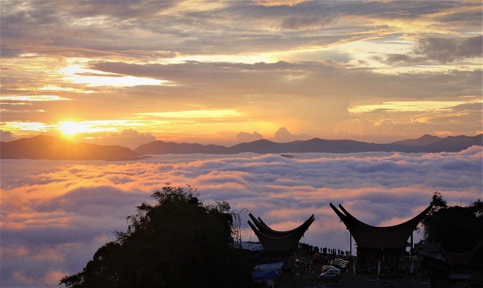
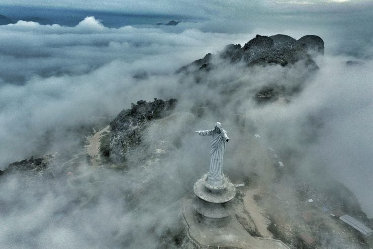

Sejarah Tana Toraja
Tana Toraja adalah salah satu kabupaten di Provinsi Sulawesi Selatan yang dihuni oleh masyarakat Toraja. Namanya secara harfiah berarti "negeri raja-raja langit", julukan yang disematkan masyarakat setempat sejak berabad-abad silam. Kawasan ini terkenal dengan arsitektur rumah adat Tongkonan yang beratap melengkung menyerupai perahu, serta upacara pemakaman Rambu Solo' yang berlangsung meriah dan menjadi daya tarik wisata budaya kelas dunia.

Selain itu, Tana Toraja juga terkenal dengan keindahan alamnya yang menakjubkan, termasuk pegunungan, lembah, dan sawah terasering yang hijau. Wisatawan yang berkunjung ke Tana Toraja dapat menikmati pemandangan alam yang memukau serta merasakan pengalaman budaya yang autentik melalui partisipasi dalam upacara
Budaya Tana Toraja
Budaya Tana Toraja sangat kaya dan unik. Salah satu aspek budaya yang paling terkenal adalah upacara pemakaman yang megah, di mana jenazah ditempatkan di dalam rumah adat yang disebut Tongkonan. Upacara ini melibatkan tarian, musik, dan persembahan hewan sebagai bentuk penghormatan kepada leluhur.

Selain itu, masyarakat Toraja juga memiliki sistem kepercayaan animisme yang kuat, di mana mereka percaya bahwa roh leluhur tetap hadir dalam kehidupan sehari-hari. Tradisi ini tercermin dalam berbagai aspek kehidupan masyarakat Toraja, termasuk arsitektur rumah adat, seni ukir, dan pakaian tradisional.
Wisata Tana Toraja
Tana Toraja menawarkan berbagai destinasi wisata yang menarik bagi para pengunjung. Salah satu tempat wisata yang populer adalah Londa, sebuah kompleks pemakaman yang terkenal dengan gua-gua batu dan patung-patung yang menggambarkan kehidupan setelah mati. Selain itu, wisatawan juga dapat mengunjungi Kete Kesu, sebuah desa adat yang terkenal dengan rumah adat Tongkonan dan ukiran kayu yang indah.

Selain itu, Tana Toraja juga menawarkan pemandangan alam yang menakjubkan, termasuk pegunungan, lembah, dan sawah terasering yang hijau. Wisatawan dapat menikmati trekking, bersepeda, atau sekadar bersantai sambil menikmati keindahan alam sekitar.
| Destinasi Wisata | Nama | Deskripsi |
|---|---|---|
|
Londa | Kompleks pemakaman dengan gua-gua batu dan patung-patung yang menggambarkan kehidupan setelah mati. |
 |
Kete Kesu | Desa adat yang terkenal dengan rumah adat Tongkonan dan ukiran kayu yang indah. |
 |
lolai negeri di atas awan | Lolai, sang Negeri di Atas Awan, menawarkan pemandangan yang magis dengan hamparan langit berbintang yang terasa begitu dekat. |
 |
Buntu Burake | Destinasi mahakarya tempat jemari raksasa Kristus memberkati malam Toraja, berlatarkan gemerlap lautan cahaya kota dan keagungan antariksa. |
| Tana Toraja menawarkan pengalaman wisata yang tak terlupakan bagi para pengunjung, dengan kombinasi keindahan alam, budaya yang kaya, dan tradisi unik yang masih dijaga hingga saat ini. | ||
Galeri Foto Tana Toraja
Berikut adalah beberapa foto yang menampilkan keindahan alam, budaya, dan tradisi unik Tana Toraja:
Daftar Aktivitas
- Mengeksplorasi dalam gua pemakaman Londa memakai pemandu lokal dan lampu lentera.
- Mengamati arsitektur kuno Tongkonan dan belanja ukiran khas di Kete Kesu'.
- Berkemah di Lolai demi berburu pemandangan matahari terbit dan samudera awan.
- Berjalan di atas jembatan kaca tebing Buntu Burake sembari menikmati pemandangan Makale.
- Berpartisipasi dalam upacara adat Toraja untuk memahami tradisi leluhur.
- Menikmati kuliner khas Toraja, seperti Pa'piong dan Daging Bakar Khas Toraja.
- Berinteraksi dengan masyarakat lokal untuk belajar tentang kehidupan sehari-hari dan budaya mereka.
- Fotografi lanskap dan budaya untuk mengabadikan keindahan Tana Toraja.
Informasi Lokasi
- Londa
- Londa Ancient Graveyard bberlokasi di Lembang Sangbua, Kecamatan Kesu, Kabupaten Toraja Utara, Sulawesi Selatan 91852. Berjarak sekitar 7 km di sebelah selatan Rantepao (ibu kota Kabupaten Toraja Utara). Berada tepat di perbatasan antara Kabupaten Tana Toraja dan Kabupaten Toraja Utara, sekitar 2 km masuk dari jalan poros Makale–Rantepao.
- Kete Kesu'
- Kete Kesu berlokasi di Desa Paepalean, Kecamatan Sanggalangi, Kabupaten Toraja Utara, Sulawesi Selatan. Terletak sekitar 5 km ke arah tenggara dari pusat kota Rantepao. Akses jalan sudah beraspal mulus dan sangat mudah dijangkau dengan kendaraan roda dua maupun roda empat.
- Lolai Negeri di Atas Awan
- Lolai - To' Tombi, Negeri di atas awan berlokasi di Desa Lolai, Kecamatan Kapala Pitu, Kabupaten Toraja Utara, Sulawesi Selatan 91854. Berada di dataran tinggi pegunungan dengan ketinggian sekitar 1.300 mdpl. Berjarak sekitar 20 km dari pusat kota Rantepao dengan waktu tempuh berkisar 45–60 menit perjalanan menanjak.
- Buntu Burake
- Buntu Burake berlokasi di Kelurahan Buntu Burake, Kecamatan Makale, Kabupaten Tana Toraja, Sulawesi Selatan. Terletak tepat di atas bukit batu karst yang mengitari ibu kota Kabupaten Tana Toraja. Berjarak sekitar 4 km dari pusat kota Makale atau sekitar 23 km dari Rantepao.
Ringkasan Informasi Destinasi
| Nama Destinasi | Daya Tarik Utama | Kategori | Estimasi Tiket Masuk |
|---|---|---|---|
| Londa | Gua Batu & Tau-Tau | Budaya / Sejarah | Rp 15.000 |
| Kete Kesu' | Tongkonan Kuno & Situs Ukiran | Desa Adat | Rp 15.000 |
| Lolai Negeri di Atas Awan | Samudera Awan & Sunrise | Wisata Alam | Rp 15.000 |
| Buntu Burake | Patung Iconik & Jembatan Kaca | Wisata Religi / Ikonik | Rp 10.000 |